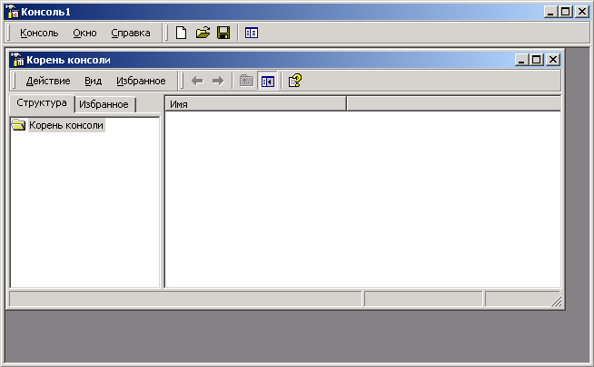
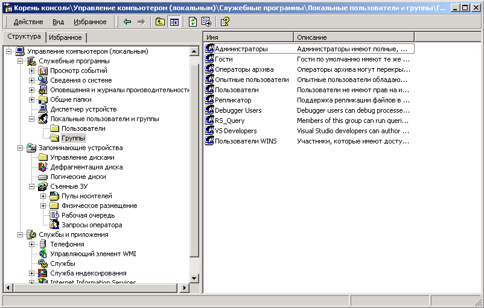

Начиная с Windows 2000, технология и средства администрирования Windows 2К претерпели кардинальные изменения. В Windows 2000 появилась единая среда управления MMC (Microsoft Management Console). MMC представляет собой общую консоль управления, которая предназначена для запуска программных модулей администрирования, конфигурирования или мониторинга локальных компьютеров и сети в целом.
Сама по себе консоль управления не обеспечивает никаких управляющих функций, а лишь является средой для оснасток (snap-ins). Оснастка − это управляющий компонент. Одна оснастка обеспечивает единицу управления, а набор оснасток составляет управляющий инструмент. Оснастки позволяют администраторам расширять и настраивать консоль для решения своих задач.
Оснастка, представляющая собой минимальную единицу управления, может вызывать другие поддерживаемые в системе элементы управления и динамические библиотеки. Оснастки могут работать в двух режимах: самостоятельном режиме и режиме расширения. В первом случае они, обладая полной функциональностью, необходимой для выполнения какой-либо задачи, не могут использовать других оснасток. В режиме расширения оснастки обеспечивают функциональность только при вызове их родительской оснасткой. Многие оснастки могут работать в обоих режимах.
2.2. Основные оснастки Windows 2000
В табл. 1 перечислены основные оснастки Windows 2000 Professional; в табл. 2 − дополнительные оснастки Windows 2000 Server. Оснастки, включенные в пользовательский интерфейс при инсталляции системы, отмечены звездочкой (*). Оснастки, работающие только на контроллере домена под управлением Windows 2000 Server, отмечены буквой "D".
Таблица 1. Оснастки, имеющиеся в Windows 2000 Professional
Оснастка |
Назначение |
Анализ и настройка безопасности (Security Configuration and Analysis) |
Служит для управления безопасностью системы с помощью шаблонов безопасности |
Групповая политика (Group Policy) |
Служит для назначения сценариев регистрации, групповых политик для компьютера и пользователей некоторого компьютера сети; позволяет просматривать и изменять политику безопасности, политику аудита и права пользователей |
Дефрагментация диска (Disk Defragmented) |
Служит для анализа и дефрагментации дисковых томов |
Диспетчер устройств (Device Manager) |
Содержит список всех устройств, подключенных к компьютеру, и позволяет их конфигурировать |
Локальные пользователи и группы (Local Users and Groups) |
Служит для управления локальными учетными записями пользователей и групп |
Общие папки (Shared Folders) |
Отображает совместно используемые папки, текущие сеансы и открытые файлы |
Оповещения и журналы производительности (Performance Logs and Alerts) |
Конфигурирует журналы данных о работе системы и службу оповещений |
Папка (Folder) |
Служит для добавления новой папки в дерево |
Просмотр событий (Event Viewer)* |
Служит для просмотра и управления системным журналом, журналами безопасности и приложений |
Сведения о системе (System Information) |
Отображает информацию о системе |
Сертификаты (Certificates) |
Служит для управления сертификатами |
Системный монитор (Performance)* |
Используется для сбора и просмотра в реальном времени данных, характеризующих работу памяти, дисков, процессора и т.д. |
Служба индексирования (Indexing Service) |
Служит для индексирования документов различных типов с целью ускорения их поиска |
Служба компонентов (Component Services)* |
Конфигурирует и управляет службами компонентов СОМ+ |
Службы (Services)* |
Запускает, останавливает и конфигурирует службы (сервисы) Windows |
Ссылка на ресурс Web (Link to Web Address) |
Служит для подключения Web -страниц (html, asp, stml) |
Управление дисками (Disk Management) |
Служит для управления дисками и защитой данных, разбиения дисков на логические тома, управления совместным доступом, форматирования и т. д. |
Управление компьютером (Computer Management)* |
Предоставляет функции администрирования системы. Содержит в своем составе ряд изолированных оснасток и оснасток расширения |
Оснастка |
Назначение |
Управление политикой безопасности IP (IP Security Policy Management) |
Служит для управления политиками IPSec для безопасного соединения с другими компьютерами |
Управление службой факсов (Fax Service Management) |
Служит для управления службой и устройствами факсимильной связи |
Управление съемными носителями (Removable Storage Management) |
Служит для управления сменными носителями информации |
Управляющий элемент (WMI Control) |
Служит для конфигурирования средств Windows Management Instrumentation и управления ими |
Шаблоны безопасности (Security Templates) |
Обеспечивает возможность редактирования файлов-шаблонов безопасности |
Элемент ActiveX (ActiveX Control) |
Подключение к дереву консоли различных элементов управления ActiveX |
Таблица 2. Дополнительные оснастки Windows 2000 Server
Оснастка |
Назначение |
*Active Directory - домены и доверие (Active Directory Domains and Trusts) (D) |
Служит для управления доменами и доверительными отношениями |
*Active Directory - пользователи и компьютеры (Active Directory Users and Computers) (D) |
Управляет пользователями, группами, организационными единицами и другими объектами AD |
*Active Directory - сайты и службы (Active Directory Sites and Services) (D) |
Определяет топологию и расписание репликации AD. Обеспечивает изменение служб корпоративного уровня Windows 2000 |
Маршрутизация и удаленный доступ (Routing and Remote Access) |
Служит для управления маршрутизацией и удаленным доступом |
Политика безопасности домена (Domain Security Policy) (D) |
Служит для управления политиками для всего домена. Фактически, представляет собой оснастку Групповая политика, настроенную на работу с конкретным доменом |
Политика безопасности контроллера домена (Domain Controller Security Policy) (D) |
Служит для управления политиками безопасности на отдельных контроллерах домена. Фактически, представляет собой оснастку Групповая политика, настроенную на работу с конкретным контроллером домена |
Распределенная файловая система DPS (Distributed file system) |
Создает и управляет распределенными файловыми системами, объединяющими совместно используемые папки на различных компьютерах |
Телефония (Telephony) |
Служит для конфигурирования служб телефонии |
Кроме перечисленных в табл.1 и табл.2 оснасток, в системе после инсталляции дополнительных служб (сетевых служб, Интернет-служб, служб терминалов), появляется множество других оснасток. Такие оснастки использующихся для администрирования этих служб.
2.3. Технологии создания новой консоли Windows 2К
2.3.1. Процедуры создания новой консоли
Создание новой консоли управления включает следующие процедуры: создание файла консоли, индивидуальную настройку окон оснасток, создание панелей задач и установку опций консоли. Ниже, на примере добавления к новой консоли оснастки Управление компьютером, описаны названные процедуры.
2.3.2. Создание файла новой консоли
В меню Пуск (Start) выберите пункт Выполнить (Run), введите mmc и нажмите кнопку ОК. Откроется окно Консоль 1 (см. рис.1) с пустой консолью (или административным инструментом).

Рис. 1. Окно консоль MMC.
В меню Консоль (Console) выберите пункт Добавить/удалить оснастку (Add/Remove Snap-in). Откроется окно Добавить/Удалить оснастку. Нажмите кнопку Добавить (Add). На экране появится окно Добавить изолированную оснастку (Add Stand-alone Snap-in) со списком изолированных оснасток, имеющихся в системе (см. рис.2). В этом окне перечисляются изолированные оснастки и оснастки расширения, которые можно добавить в консоль Оснастки можно добавлять к корню консоли управления или к уже имеющимся изолированным оснасткам (другим узлам дерева).

Рис. 2. Окно «Добавить изолированную оснастку».
Выполните двойной щелчок на пункте Управление компьютером. Появится окно с конфигурационными опциями для данной оснастки. Оставьте переключатель в положении локальным компьютером (Local computer). Затем нажмите кнопку Готово (Finish) и, далее, -- кнопку Закрыть в окне Добавить изолированную оснастку.
В окне Добавить/Удалить оснастку перейдите на вкладку Расширения (Extensions). На этой вкладке приведен список оснасток расширения, которые поставляются вместе с выбранными изолированными оснастками. Если вы не собираетесь подключать все оснастки расширения, сбросьте флажок Добавить все расширения (Add all extensions), установленный по умолчанию, и снимите флажки с лишних оснасток. По окончании процедуры нажмите кнопку ОК. Закройте окно добавления оснасток, нажав кнопку ОК. Теперь окно консоли содержит оснастку Управление компьютером (см. рис.3).
Для того чтобы сохранить созданный инструмент, в меню Консоль выберите пункт Сохранить как (Save As) и укажите имя файла и папку, в которой будет сохранен файл консоли.
2.3.3. Индивидуальная настройка окон оснасток
После добавления оснасток можно развернуть окна оснасток, чтобы облегчить работу с ними. Для этого выполните следующие действия:
В левом подокне (в окне структуры) только что созданной консоли щелкните правой кнопкой мыши на узле Управление компьютером и выберите в контекстном меню пункт Новое окно отсюда (New Window from Here). Будет открыто окно Управление компьютером, представляющее одноименную оснастку. Закройте исходное окно, содержащее Корень консоли.

Рис. 3. Окно «Управление компьютером».
В меню Окно (Window) выберите команду Сверху вниз (Tile Horizontally).
2.3.4. Создание панелей задач
Если требуется создать файл консоли для другого пользователя, то полезно предоставить пользователю упрощенный инструмент, позволяющий выполнять только несколько определенных задач. Таким инструментом является Панель задач (Taskpad).
Для создания панели задач выполните следующее:
В меню Действие (Action) или в контекстном меню любого узла в окне консоли выберите пункт Новый вид панели задач (New Taskpad View), откроется окно Мастера создания вида панели задач (New Taskpad View Wizard). Нажмите кнопку Далее.
В следующем окне мастера (см. рис.4) будет предложено выбрать стиль отображения и размер панели задач. Затем, на панели задач вы можете указать использование только тех задач, которые связаны с текущим узлом или со всеми узлами дерева. В следующем окне потребуется ввести имя и описание создаваемой панели задач.
Если вы не собираетесь добавлять новые задачи на созданную панель, то снимите в последнем окне мастера флажок Запустить мастер создания новой задачи (Start New Task Wizard). В противном случае, по завершении работы Мастера создания вида панели задач, запустится Мастер создания задач (New Task Wizard), который «потребует» указать функцию задачи: запуск команды меню, программы или команды перехода на вид, выбранный на вкладке Избранное. При этом если новая задача будет запускать команду меню, то в следующем окне мастер предложит выбрать команду меню из элементов дерева консоли или из списка в окне сведений данного элемента. В остальных окнах мастера следуйте его указаниям.

Рис.4. Окно «Мастер создания вида панели задач».
Если требуется создать несколько задач на одной панели, то установите в последнем окне мастера флажок Запустить этот мастер снова (Run this wizard again). Затем нажмите кнопку Готово.
Для удаления лишних меню и панелей инструментов в созданной консоли выберите на панели инструментов меню Вид (View), затем, - опцию Настроить (Customize) и снимите соответствующие флажки в окне Настройка вида (Customize View).
2.3.5. Установка опций консоли
Если консоль создается для другого пользователя, может оказаться полезным установить запрет на изменение консоли. Для этого в меню Консоль выберите пункт Параметры (Options), затем, установите в списке Режим консоли (Console mode) значение Пользовательский режим - полный доступ (User Mode - full access), нажмите кнопку ОК и сохраните файл. Новый режим начнет работать при следующем запуске файла консоли.
В этом режиме пользователь не сможет добавлять новые оснастки в инструмент, но будет иметь возможность изменять расположение окон.
3. Порядок выполнения работы
3.1. Изучите теоретический материал, изложенный в пункте 2 описания данной лабораторной работы.
3.2. Включите закрепленный за Вами компьютер и выполните необходимую процедуру регистрации.
3.3. Используя инструкции пункта 2 этой лабораторной работы, создайте консоли администратора локальной сети класса С, и консоли администраторов подсетей локальной сети, заданной в расчетной части Вашего индивидуального задания.
Консоль администратора локальной сети должна содержать оснастку «Управление компьютером» и панель задач, обеспечивающую запуск всех четырех консолей администраторов подсетей.
Консоль каждого из администраторов подсетей должна содержать оснастку "Локальные пользователи и группы" и панели задач, обеспечивающие запуск MS Word и Total Commander.
Проверьте работоспособность созданных консолей.
3.4. Оформите отчет и защитите лабораторную работу.
3.5. Выключите компьютер и приведите в порядок рабочее место.
4. Содержание отчета
4.1. Цель работы.
4.2. Описание процедур создания консолей. Результаты эксперимента.
4.3. Выводы по работе.
5. Контрольные вопросы.
1. Охарактеризуйте основные оснастки Windows 2000.
2. В чем состоят основные достоинства ММС?
3. Опишите процедуру создания файла новой консоли.
4. Для какой цели создается панель задач консоли?
5. Каким образом можно добавить новую оснастку в существующую консоль?
6. Каким образом осуществляется удаление лишних меню и панелей инструментов созданной консоли?
7. Как установить запрет на изменение консоли?
Литература
1. Windows 2000 Professional: Учебный курс MCSE. – М.: Русская редакция , 2001. - 672с.
2. Безопасность сети на основе Windows 2000: учебный курс MCSE. – М.: Русская редакция , 2001. - 912с.
3. Сети TCP/IP. Ресурсы Windows MS Windows 2000 Server. – М.: Русская редакция, 2001.-784с.
4. Олифер В.Г. Сетевые операционные системы. Учебник. – СПб.: Питер, 2001.-544с.
5. Зубанов Ф.В. Windows 2000: планирование, развертывание, установка. - М.: Русская редакция, 2000.-592с.